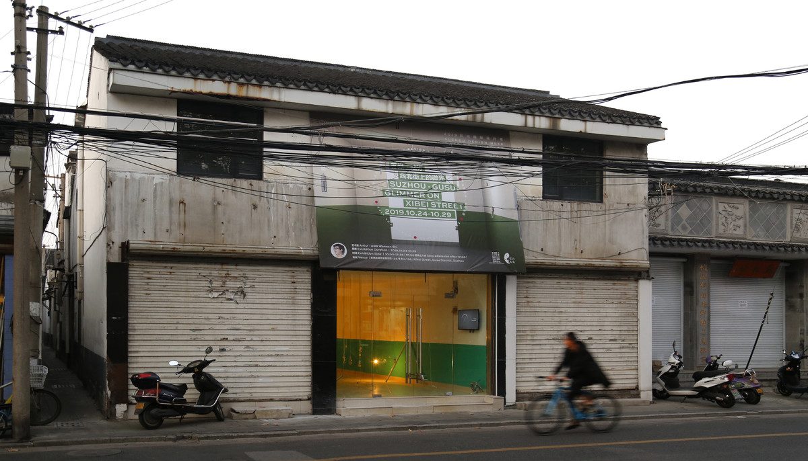
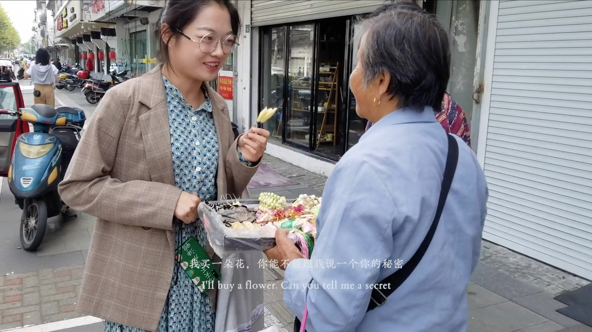
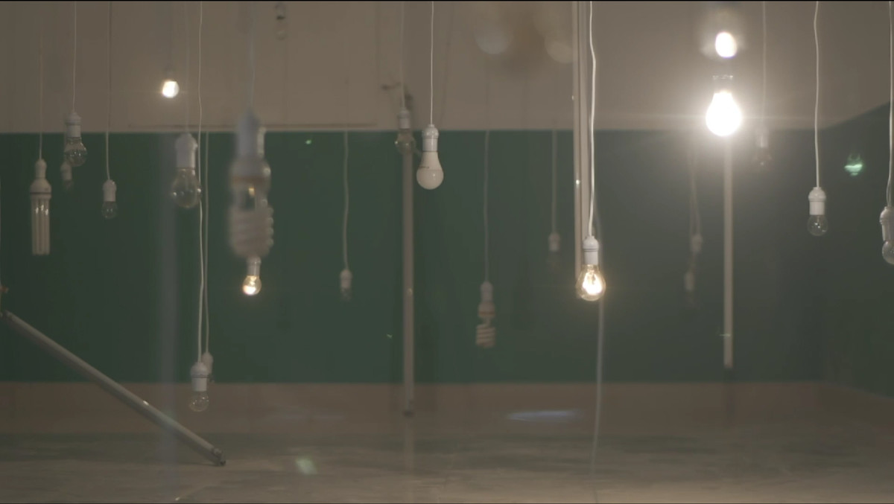
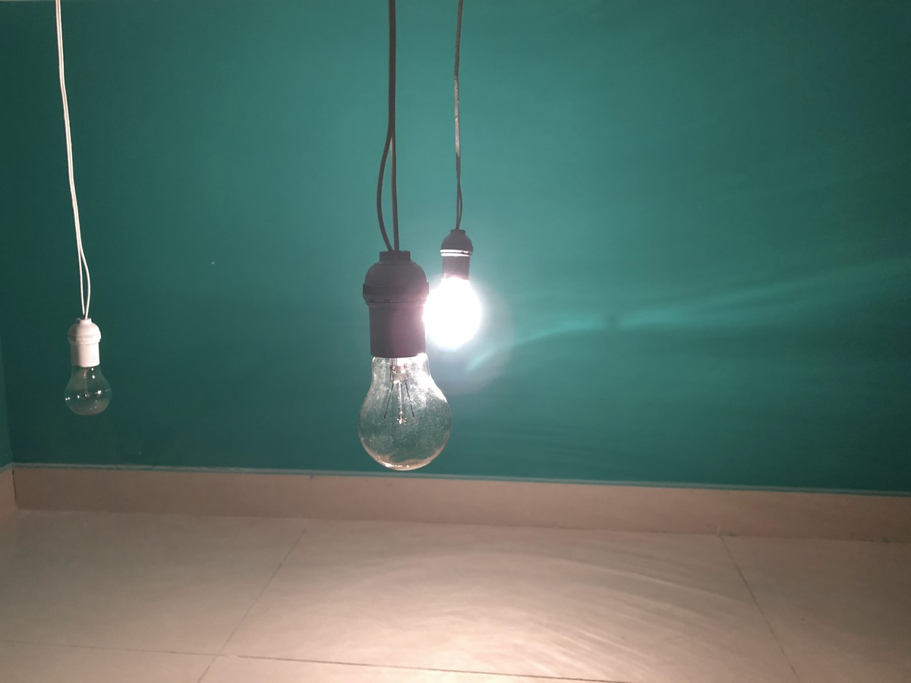

西北街的微光 | GLIMMER ON XIBEI STREET

空间装置为770x310cmx246cm，录像为8分钟，单屏幕双声道可变尺寸，2019
Action art, Spatial installation, 770x310cmx246cm, Video art Color single-screen dual-channel , 8minutes, Variable，2019
2019年10月，在苏州西北街上的居民那里收集了40个秘密，将这些秘密转换成莫斯电码信号，通过灯光闪烁出来。这些秘密一直闪烁在西北街的天空中。
In October 2019, residents in Xibei Street Suzhou collected 40 secrets, converted them into Morse code signals and flashed them through lights.These secrets shine in the sky of Xibei Street.
本项目受2019年苏州国际设计周委托创作，并获得2019苏州国际设计周最佳创意奖。
This project was commissioned by 2019 Suzhou design week and won the best creative award of 2019 Suzhou design week.

西北街，苏州
Xibei Street, Suzhou

西北街，苏州
Xibei Street, Suzhou

西北街，苏州
Xibei Street, Suzhou